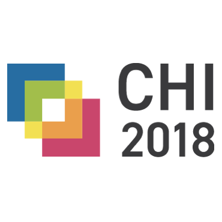

Online Spaces and Sensitive Populations
Online spaces can be important platforms for people from sensitive, stigmatized, and vulnerable populations to discuss their
problems and find support; yet platform design decisions impact how people present themselves and interact with others.
By studying these groups' online self-presentation and disclosure practices, along with the politics of social media platform design,
we can understand how to design technology to better support those facing difficult issues like sexual abuse, relationship breakups,
eating disorders, depression, and gender presentation.
Selected Publications
 "The Language of LGBTQ+ Minority Stress Experiences on Social Media,"
a paper I co-authored with Koustuv Saha (lead author), Sang Chan Kim, Manikanta Reddy, AJ Carter,
Eva Sharma, and Munmun De Choudhury, has been accepted to
CSCW 2019.
"The Language of LGBTQ+ Minority Stress Experiences on Social Media,"
a paper I co-authored with Koustuv Saha (lead author), Sang Chan Kim, Manikanta Reddy, AJ Carter,
Eva Sharma, and Munmun De Choudhury, has been accepted to
CSCW 2019.
September 4, 2019
 I have a forum article in the new issue of
ACM Interactions
Magazine, titled
"How
to Do Better with Gender on Surveys: A Guide for HCI Researchers," co-authored
with Katta Spiel (lead author) and Danielle Lottridge.
I have a forum article in the new issue of
ACM Interactions
Magazine, titled
"How
to Do Better with Gender on Surveys: A Guide for HCI Researchers," co-authored
with Katta Spiel (lead author) and Danielle Lottridge.
July 9, 2019
 "Social Support, Reciprocity, and Anonymity in Responses to Sexual Abuse Disclosures
on Social Media," a TOCHI
paper I co-authored with Nazanin Andalibi (lead author), Munmun De
Choudhury, and Andrea Forte, will be presented at CHI 2019
by Nazanin Andalibi.
"Social Support, Reciprocity, and Anonymity in Responses to Sexual Abuse Disclosures
on Social Media," a TOCHI
paper I co-authored with Nazanin Andalibi (lead author), Munmun De
Choudhury, and Andrea Forte, will be presented at CHI 2019
by Nazanin Andalibi.
March 7, 2019

A paper I co-authored with collaborators from Yahoo! and Princeton is accepted
for CHI 2018, titled
"'Genderfluid'
or 'Attack Helicopter': Responsible HCI Research Practice with Non-Binary Gender Variation
in Online Communities." The paper is led by Samantha Jaroszewski and co-authored with Danielle
Lottridge and Katie Quehl.
December 15, 2017
I had two papers accepted for CHI 2017!
The first one is titled "What Makes Live Events Engaging on Facebook Live, Periscope,
and Snapchat," co-authored with John Tang. The other is "Class
Confessions: Restorative Properties in Online Experiences of Socioeconomic Stigma,"
co-authored with Eugenia Ha Rim Rho, Nazanin Andalibi, Melissa Mazmanian, and
Gillian Hayes.
January 19, 2017
 "Baking
Gender Into Social Media Design: How Platforms Shape Categories for Users and Advertisers,"
a paper I co-authored with Rena Bivens, was
published in the Social Media + Society
special issue on "Making
Digital Cultures of Gender and Sexuality with Social Media!"
"Baking
Gender Into Social Media Design: How Platforms Shape Categories for Users and Advertisers,"
a paper I co-authored with Rena Bivens, was
published in the Social Media + Society
special issue on "Making
Digital Cultures of Gender and Sexuality with Social Media!"
October 25, 2016
"Constructing
and enforcing 'authentic' identity online: Facebook, real names, and
non-normative identities," a paper I co-authored with Anna Lauren Hoffmann, was
published in the First Monday
special issue on "A
decade of Web 2.0 - Reflections, critical perspectives, and beyond!"
July 7, 2016
"Social Support, Reciprocity, and Anonymity in Responses to Sexual Abuse Disclosures
on Social Media," a TOCHI
paper I co-authored with Nazanin Andalibi (lead author), Munmun De
Choudhury, and Andrea Forte, will be presented at CHI 2019
by Nazanin Andalibi.
March 7, 2019
I forgot to announce this when we first found out! "'Hunger Hurts but Starving Works:' Characterizing the Presentation of Eating Disorders
Online," a paper that I collaborated on with Jessica Pater, Nazanin Andalibi, and
Elizabeth Mynatt, was accepted for the
2016 ACM Conference on Computer-Supported Cooperative Work and Social Computing!
October 16, 2015